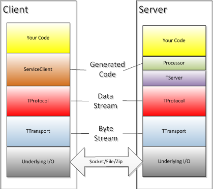
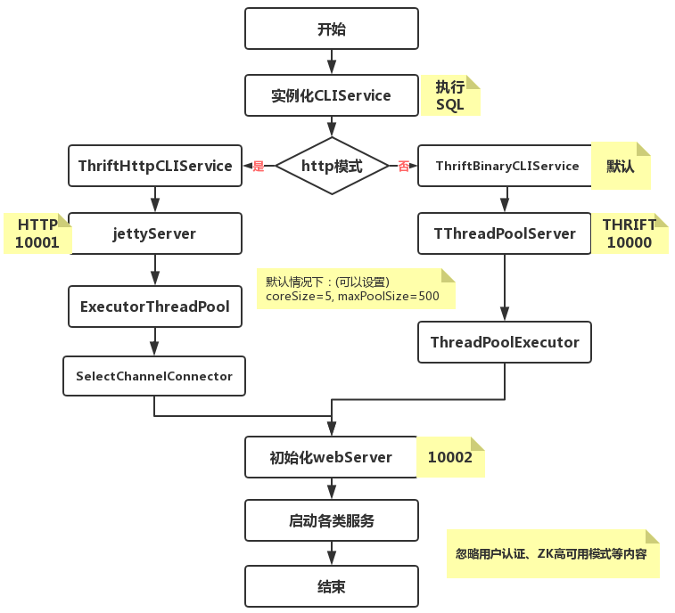
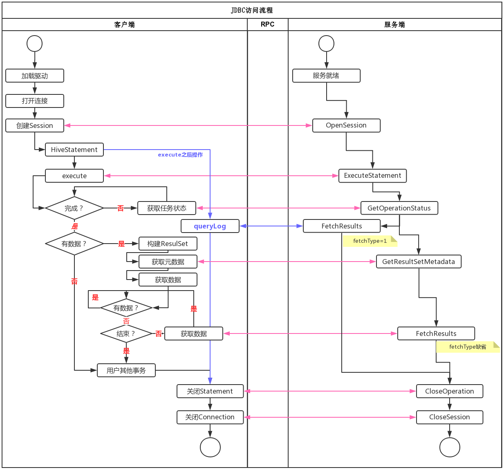
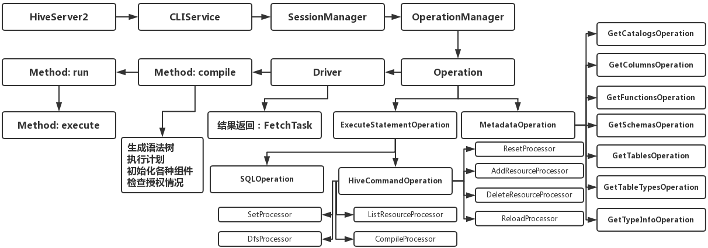
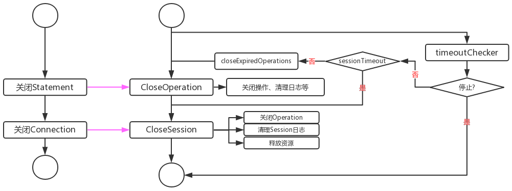

1. 环境描述
- JDK版本：
java version “1.8.0_181”
Java(TM) SE Runtime Environment (build 1.8.0_181-b13)
Java HotSpot(TM) 64-Bit Server VM (build 25.181-b13, mixed mode) - Thrift版本：Thrift version 0.11.0
- Hive版本：Hive 1.1.0-cdh5.14.2
2. 初识Thrift
2.1. 基本类型
| 概念 | Thrift | Java |
|---|---|---|
| 逻辑变量 | bool | boolean |
| 字节变量 | i8 | byte |
| 16位整数 | i16 | short |
| 32位整数 | i32 | int |
| 64位整数 | i64 | long |
| 浮点数 | double | double |
| 字符串 | string | java.lang.String |
| 列表 | list | java.util.List |
| 集合 | set | java.util.Set |
| 映射 | map | java.util.Map |
2.2. 关键概念
2.2.1. 关键字
- struct
- service
- exception
- required
- optional
- const
- typedef
- include
2.2.2. Thrift三组件
Thrift中比较重要的是TProcess、TProtocol、TTransport三个组件，通过名称就可以可知组件的功能，这里不做细究。Thrift协议栈的层级情况，如下所示：

其中主要的TProtocol包括：TBinaryProtocol、TCompactProtocol、TJSONProtocol、TProtocolDecorator、TSimpleJSONProtocol，主要的TServer包括TSimpleServer、TThreadPoolServer、TNonblockingServer、TThreadedSelectorServer。
从图中可以看出，Thrift已经帮助做了很多封装与代码的生成。作为使用者，无需细究自动生成代码内部的机制，特别是比较底层的I/O层面操作。通过编写Thrift文件，使用thrift命令可以自动生成相应的Java类，特别是TProcess基本上无需开发者介入，只需要调用即可。
2.2.3. 简单示例
- Thrift文件
1
2
3
4
5namespace java com.simple.www
service Hello{
string helloString(1:namespace java com.simple.www
service Hello{
string helloString(1:string para)
} - 服务端代码
1
2
3
4
5
6
7
8
9
10
11
12
13
14
15try {
TServerTransport serverTransport = new TServerSocket(7911);
Factory proFactory = new TBinaryProtocol.Factory();
TProcessor processor = new Hello.Processor<HelloServiceImpl>(new HelloServiceImpl());
Args args_ = new Args(serverTransport).processor(processor).protocolFactory(proFactory)
.executorService(Executors.newFixedThreadPool(10));
TServer server = new TThreadPoolServer(args_);
System.out.println("Start server on port 7911...");
server.serve();
} catch (TTransportException e) {
try {
TServerTransport serverTransport = new TServerSocket(7911);
Factory proFactory = new TBinaryProtocol.Factory();
TProcessor processor = new Hello.Processor<HelloServiceImpl>(new HelloServiceImpl());
Args args_ = new Args(serverTransport).processor(processor).protocolFactory(proFactory)
.executorService(Executors.newFixedThreadPool(10));
TServer server = new TThreadPoolServer(args_);
System.out.println("Start server on port 7911...");
server.serve();
} catch (TTransportException e) {
// TODO Auto-generated catch block
e.printStackTrace();
} - 客户端代码
1
2
3
4
5
6
7
8
9
10
11
12
13
14
15
16
17
18
19
20
21
22try {
TTransport transport = new TSocket("localhost", 7911);
transport.open();
TProtocol protocol = new TBinaryProtocol(transport);
Hello.Client client = new Hello.Client(protocol);
String res = client.helloString("[This is a test helloString]");
System.out.println("Result:" + res);
transport.close();
System.out.println("成功关闭:" + transport.isOpen());
} catch (TTransportException e) {
// TODO Auto-generated catch block
e.printStackTrace();
} catch (TException e) {
// TODO Auto-generated catch block
e.printStackTrace();
} catch (InterruptedException e) {
try {
TTransport transport = new TSocket("localhost", 7911);
transport.open();
TProtocol protocol = new TBinaryProtocol(transport);
Hello.Client client = new Hello.Client(protocol);
String res = client.helloString("[This is a test helloString]");
System.out.println("Result:" + res);
transport.close();
System.out.println("成功关闭:" + transport.isOpen());
} catch (TTransportException e) {
// TODO Auto-generated catch block
e.printStackTrace();
} catch (TException e) {
// TODO Auto-generated catch block
e.printStackTrace();
} catch (InterruptedException e) {
// TODO Auto-generated catch block
e.printStackTrace();
}
3. HiveServer2提交任务
本小节，我们考虑以下几个问题：
- HS2启动干了那些事情？
- HSQL任务是如何提交？
- HSQL任务是如何执行？
- HS2如何做队列管理？
- 任务执行完成，资源如何释放？
3.1. HiveServer2启动流程
HiveServer2的启动涉及到多个方面的资源，这里不详细讲解，主要描述初始化的大体流程。

- 首先，父类初始化一些核心参数，例如服务端口、本机地址、ServerContext、TServerEventHandler等处理事务的必备组件
- 其次，初始化CLIService这个类。这个类主要用作SQL请求的执行，后面说明该类执行任务的流程。接下来根据用户的设置判断启动Http模式的jetty服务，还是启动Thrift监听服务
- 最后，构建一个HS2WEB服务，用于展示HS2的信息。这一块就是我们看到的URL: http://hdfs-nn-1.sv.ebu.alsh.xingbianli.com:10002/hiveserver2.jsp ，这个服务也是一个内嵌Jetty服务。主要包括：[/jmx–>JMXJsonServlet.class]、[/conf–>ConfServlet]、[/stacks–>StackServlet]，以及日志处理[/logs]和首页[hiveserver2.jsp]。
3.2. 提交任务流程
HS2服务启动之后，客户端就可以提交任务了。那么任务是如何提交的？这就是本小节的关注重点。客户端提交任务，我们只研究JDBC模块的内容，Beeline方式提交任务可以参考JDBC模式。
研读HiveDriver的内容，可以发现客户端与服务端存在如下交互。

从HiveJDBC提交任务的流程来看，主要的工作放在服务端。客户端主要用来发起任务、提交任务、获取任务结果等内容，相对比较简单。
3.3. 服务器端执行任务流程
客户端提交任务之后，服务端执行任务。执行任务的逻辑与流程主要如下所示

3.4. 队列管理方式
对于HS2的任务队列管理，我们犹如下疑问
- 任务提交队列
- 任务执行策略：FIFO ? FAIR ?
- 结果回调方式
- 队列满了如何解决？
提交任务就涉及到一个任务队列的管理。本小节主要关注HS2管理任务队列的方式，任务添加策略、执行的策略，以及如何处理一些异常情况。
针对我们提出的问题，对源码进行了研究。根据HS2源码的实现，可以看出HS2并没有对客户端提交的任务进行相关的队列处理或进行相关的调度算法实现。以Thrift方式而言，任务队列或者任务并行数的控制是通过Thrift线程并行服务来实现的，既ExecutorService。服务端针对客户端的连接服务是TThreadPoolServer，即面向连接池的服务，因此本质上而言我们可以认为它是一个FIFO的队列。其队列的实现如下所示
1 | ExecutorService executorService = new ThreadPoolExecutor(minWorkerThreads, maxWorkerThreads, |
其中minWorkerThreads是通过hive.server2.thrift.min.worker.threads来设置的，默认值为5；maxWorkerThreads是通过hive.server2.thrift.max.worker.threads来设置，默认值为500。通过源码可以看出，这里的这两个设置控制的是线程池的核心线程数与最大线程数，并不是语义上的最大并行线程数与最小并行线程数。
由于服务端的请求是通过Thrift RPC方式并且是异步进行的，所以客户端在实现上是轮训服务端的执行状态，从而客户端看起来是同步进行的。由于客户端的请求要么让Thrift服务处理，要么让jettyServer处理，无论哪种方式如何客户端打开session数量超过maxWorkerThreads，那么客户端的提交请求过程会被堵塞，因而服务端不存在任务队列满了如何处理这种情况。
3.5. 关闭任务流程
任务运行结束，程序会关闭连接并释放资源。主要关闭流程如下所示。

这里提到的关闭流程主要指的是正常关闭流程，主要是指关闭Operation、Session等。其中Yarn上运行的任务被Kill这种情况，我们认为是运行认为失败，不被包含在关闭流程中。
4. HiveServer2的优缺点
4.1. 优点
- 统一口径：JDBC/Beeline等统一访问，任务集中管理
- 支持本地MR：一些简单的任务，可以直接运行在本地，减轻Yarn集群压力
- Thrift协议：支持扩平台、扩语言[Java、Python等]、可远程等优点，继承RPC的各项优点
- HA机制：解决应用端的并发与负载均衡问题
- 安全认证：支持多种协议，支持自定义安全认证
- 数据隔离：不直接将HDFS与Metastore暴露给用户
4.2. 缺点
- 内存：可能会OOM。作为一个独立的Java应用，需要根据业务需求，不断调整Java_OPS的设置。如果节点性能较好，尽量配置大一些
- 目前HiveJDBC无法获取任务ID，或Yarn上运行的ID信息，并且获取任务执行日志比较困难
4.3. 疑问
- 目前Thrfit支持TThreadedSelectorServer，为什么还用TThreadPoolServer ？ 即使目前的最新版本Hive 3.1，使用的仍然是TThreadPoolServer
5. 参考文章
本博客所有文章除特别声明外，均采用 CC BY-SA 4.0 协议 ，转载请注明出处！